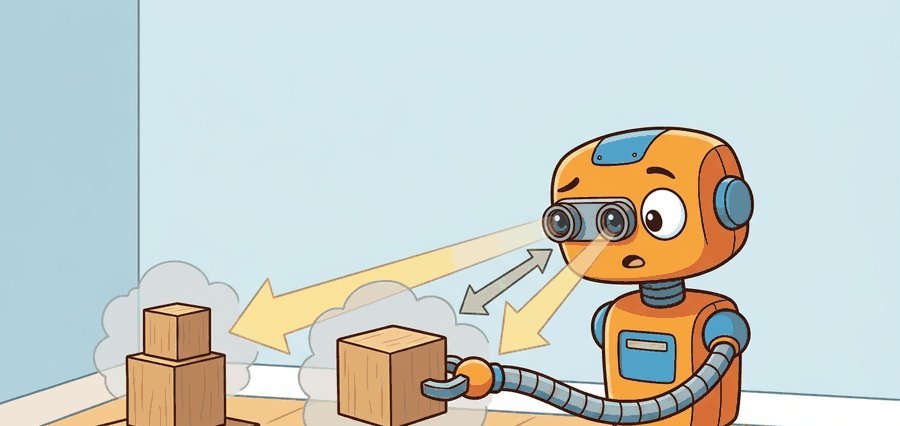

"Depth is useful when scale errors are smaller than the robot's clearance and contact margins."
A Patient Embodied AI Agent

This section assumes familiarity with the pinhole camera model, coordinate frames, and the intrinsic/extrinsic matrix derivation covered in section 4.6. The metric-scale reasoning developed here carries directly into section 27.4, where optical flow provides a complementary motion-based cue that shares the same frame conventions. Both depth and flow recur in Part IX alongside grasp approach and collision clearance, particularly in section 42.4 on perception for manipulation.
A robot arm reaches for a cup. The monocular depth network predicts the cup is 42 cm away. The real distance is 31 cm. The gripper closes on air. That 11 cm error is not a rounding issue: it is a failed grasp, a knocked-over object, or a collision. Modern depth networks have become impressively accurate on benchmarks, yet robots still crash because benchmark accuracy and metric scale in a live robot frame are different things. This section develops the full contract: how raw depth signals are converted into trusted, frame-anchored, uncertainty-bounded distances that a planner can act on, and exactly where that chain breaks in practice.
Problem First: Why This Representation Exists
A visually plausible depth map can be dangerous when metric scale, calibration, or uncertainty is wrong. Embodied use needs depth in a named frame with error bounds tied to the robot body.
The contract here maps pixels to metric state: depth source, camera intrinsics, extrinsics, uncertainty, timestamp, and the planner or controller that consumes the resulting geometry.
Depth becomes embodied knowledge when an error bound changes clearance, grasp approach, foot placement, or stopping distance.
Figure 27.3.1 should be read as a metric-scale contract: depth source, scale calibration, frame transform, uncertainty, and action consumer determine whether the robot can reach or avoid safely.
Mathematical Core
The pinhole camera model lifts a depth pixel into a 3D camera-frame point.
$X_c=\frac{(u-c_x)z}{f_x},\quad Y_c=\frac{(v-c_y)z}{f_y},\quad Z_c=z,\quad z_{\mathrm{stereo}}=\frac{fB}{d}$
The first three equations use metric depth directly. The stereo equation shows why small disparity errors compound at range: when disparity $d$ is small, the same one-pixel error that moves a near object by 2 cm moves a far object by 20 cm, which is why far obstacles and reflective surfaces deserve extra caution.
The baseline $B$ matters because a robot with a narrow stereo rig has less geometric leverage: two cameras 6 cm apart (typical on a drone) resolve depth far more coarsely than cameras 30 cm apart (typical on a humanoid torso). A small $B$ forces the denominator $fB$ small, which amplifies any disparity error directly into distance error. For grasping, this means a wrist-mounted narrow-baseline camera is unreliable beyond roughly 0.8 m without a depth sensor backup.
Stereo depth works by triangulating the same physical point seen from two laterally separated viewpoints. Each camera images the point at a slightly different horizontal pixel position; the difference in those positions is the disparity $d$. Because the camera geometry is fixed and calibrated, the angle between the two lines of sight is known, and the triangle formed by the two optical centers and the point resolves to a unique metric distance. A larger $B$ opens a wider angle, making the triangle better conditioned and the resulting distance estimate more precise.
Before reading on, consider: if a one-pixel disparity error shifts a nearby object by 2 cm, what does it do to an object at the far end of a warehouse aisle?
When using a monocular depth model such as Depth Anything v2 or Metric3D v2, always verify metric scale against at least one known-size anchor in the scene (a calibration board, a robot link with known length, or a lidar sweep) before the depth estimate reaches the planner. The scale_factor = z_lidar / z_mono correction is a single scalar multiply and takes under one millisecond, but skipping it is the single most common source of silent clearance errors in manipulation pipelines. If no anchor is available at runtime, mark the depth estimate with a scale_unchecked flag and widen the planner's safety margin by the model's documented scale-error percentile for that range.
- Check the camera intrinsics and depth units before any planning call.
- Reject missing, saturated, or physically impossible depth pixels.
- Back-project task-relevant pixels into the camera frame, then transform them into the robot frame.
- Compare the resulting clearance against controller limits and uncertainty margins.
| Design Choice | Use When | Control Risk |
|---|---|---|
| Stereo | Outdoor robots and textured scenes | Low texture and far range create unstable disparity. |
| RGB-D or time-of-flight | Indoor manipulation and tabletop mapping | Reflective, transparent, or black materials can corrupt depth. |
| Monocular depth | Semantic priors and fallback estimates | Metric scale may drift without calibration or known references. |
Worked Miniature
Code Fragment 27.3.1 implements the back-projection equations with one pixel and one depth value. This is the smallest useful check before passing points into Open3D or a planner.
# Back-project one depth pixel through camera intrinsics.
# The output is a metric 3D point in the camera frame.
fx, fy = 615.0, 615.0
cx, cy = 320.0, 240.0
u, v, z_m = 350.0, 260.0, 1.20
x_m = (u - cx) * z_m / fx
y_m = (v - cy) * z_m / fy
point_c = (round(x_m, 3), round(y_m, 3), z_m)
print(point_c)Interpret this expected output tuple as a metric point in the camera frame, not an image-space feature. The lateral offsets are only a few centimeters, which is small enough to look harmless in pixels but large enough to change grasp clearance or foot placement.
Consider a mobile manipulator approaching a shelf edge at a measured depth of 0.50 m, planning a 0.05 m clearance stop. A 10 percent monocular depth scale error means the true distance is 0.45 m, which consumes the entire clearance margin and places the end-effector in contact with the shelf. The error is invisible in the depth image (the map looks plausible), undetected by the neural network (it reports high confidence), and only revealed at collision. This is the canonical failure pattern: scale drift accumulates silently, the planner inherits a corrupted metric, and the robot executes a motion that was geometrically valid given wrong numbers. The fix is not a better depth model alone; it is a pipeline that tracks calibration provenance, flags scale-unchecked estimates before they enter the planner, and maintains conservative uncertainty margins proportional to the depth source's known scale error at that range.
OpenCV's cv2.rgbd.RgbdOdometry and Open3D's o3d.geometry.RGBDImage.create_from_color_and_depth collapse back-projection into two function calls, and both default to millimeter depth units from RealSense D435 output. A Franka Panda pipeline that passes those millimeter values directly into an SE(3) (Special Euclidean group in 3D, representing rigid-body rotations and translations) grasp planner expecting meters will place the gripper 1000x too far away; the robot arm will hit its joint limits and fault before the first approach move. The shortcut handles formats and vectorization, but it does not verify units, reject missing depth pixels on transparent cups, or confirm that the camera-to-robot-base extrinsic is current. Validate all three before the point cloud enters a planner or a Gaussian-splatting map update.
Think of a hiking map that uses a consistent but unstated scale: every trail, lake, and ridge is in the correct relative position, so navigation between landmarks feels right, but you cannot tell whether the summit is 3 km away or 30 km away without reading the legend. A monocular depth model in affine-invariant mode (meaning depth is predicted only up to an unknown global scale and an unknown additive shift, so neither the multiplier nor the zero-point is anchored to physical meters) is exactly that unlabeled map. The scene geometry is correctly ordered (the mug is in front of the wall, the shelf is above the table), but every distance is stretched or compressed by an unknown global factor. Plugging that map into a robot planner without finding the legend (a physical scale anchor) is how a gripper that looks perfectly positioned in the depth image ends up closing 11 cm from the cup.
A common assumption is that a depth network achieving low benchmark error will produce metrically reliable estimates in a robot pipeline. That assumption is wrong. Benchmarks measure accuracy in relative or affine-invariant terms. They do not anchor results to absolute metric scale for a specific camera and robot frame. A monocular model can rank scene geometry correctly (closer objects appear closer) while its absolute distances drift by a constant factor. That drift is invisible in the depth image, yet it directly causes grasp misses and collisions. Metric depth requires a full contract: pair each depth value with verified camera intrinsics, a current extrinsic transform, a scale anchor checked against a physical reference, and an uncertainty bound before the planner uses it.
Depth maps often fail silently on transparent cups, glossy tabletops, thin chair legs, and motion blur. The robot must know when depth is absent or unreliable, not only when it is numerically present.
A drone landing system can accept monocular depth for exploratory terrain scoring, but final descent should require scale-checked stereo, lidar, or trusted altitude sensing with a conservative uncertainty margin.
For Depth estimation and metric scale, the perception result must answer what action changed, what uncertainty changed, and what log would reproduce the decision. Otherwise the output is still visualization, not embodied evidence.
Debugging And Evaluation
Evaluate depth through geometry-sensitive actions: record depth source, calibration version, transform, predicted clearance, selected trajectory, contact or collision outcome, and scale-error label.
Perturb textureless surfaces, reflective materials, range, lighting, and calibration offsets, then check whether the planner margin catches the depth error before execution.
Foundation depth models are improving fast, but robotics still needs calibrated scale, uncertainty, and temporal consistency. The open problem is not producing pretty depth, it is certifying when depth is good enough for contact or collision decisions.
Direction 1: Zero-shot metric depth from a single image. Depth Anything v2 (Yang et al., 2024) and Metric3D v2 (Hu et al., 2024) established (as of 2024) that large vision foundation models can produce metrically accurate monocular depth without camera-specific calibration files. The 2025 follow-on UniDepth v2 (Piccinelli et al., 2025, CVPR 2025) pushes further, jointly predicting camera intrinsics and metric depth from a single uncalibrated image, reducing deployment friction for robots that swap lenses or operate in uncontrolled lighting.
Direction 2: Temporally consistent video depth for moving robots. Single-frame depth models produce flickering estimates that destabilize planners. DepthCrafter (Hu et al., 2024) and Video Depth Anything (Chen et al., 2025) extend diffusion-based video generation priors to produce temporally smooth, geometrically consistent depth sequences over long video, addressing the jitter that corrupts optical-flow and SLAM pipelines when the robot or the scene is in motion.
Direction 3: Uncertainty-aware depth for safe contact decisions. Scale error is silent in standard depth maps. Recent work from the Princeton Vision and Learning Lab (e.g., GaussianDepth, 2025) fuses monocular depth with 3D Gaussian representations to produce per-pixel scale uncertainty estimates, giving planners a principled signal for when to trust a depth reading and when to widen the safety margin.
Open problem for a PhD student: None of the current metric depth systems produce a certified uncertainty bound that degrades gracefully at the material and lighting boundaries where depth most often fails (transparent glass, specular metal, motion blur at object edges). A tractable thesis topic is conformal prediction applied to monocular depth: can a lightweight wrapper around an existing foundation model produce statistically valid per-pixel prediction intervals at real-time frame rates, and do those intervals shrink as the robot collects more structured-light or lidar observations of the same scene? The key challenge is that depth errors are spatially correlated and heteroscedastic, so naive conformal coverage guarantees break exactly where the robot needs them most.
Section 27.4 adds the time dimension: once metric depth is established, optical flow reveals how quickly regions move and whether the robot needs to react before a slower reconstruction pipeline can respond.
Section References
OpenCV. Camera calibration and 3D reconstruction documentation. https://docs.opencv.org/4.x/d9/d0c/group__calib3d.html
Primary implementation reference for calibration, projection, stereo, and pose routines.
Open3D. RGB-D images and point cloud documentation. https://www.open3d.org/docs/release/tutorial/geometry/rgbd_image.html
Shows the practical library path from depth images to point clouds.
Yang, L. et al. (2024). Depth Anything V2. arXiv. https://arxiv.org/abs/2406.09414
Scales monocular metric depth estimation to 70 m using a ViT-L backbone and improved synthetic-to-real training. Read to understand how pseudo-label quality and backbone size jointly determine metric accuracy at outdoor robotic ranges.
Hu, W. et al. (2024). Metric3D v2: A Versatile Monocular Geometric Foundation Model for Zero-Shot Metric Depth and Surface Normal Estimation. arXiv. https://arxiv.org/abs/2404.15506
Achieves zero-shot metric depth across arbitrary camera intrinsics by canonicalizing depth before decoding. Read to understand how decoupling camera-space geometry from intrinsic parameters enables deployment without precise calibration files.
Keetha, N. et al. (2024). SplaTAM: Splat, Track and Map 3D Gaussians for Dense RGB-D SLAM. CVPR 2024. https://arxiv.org/abs/2312.02126
Demonstrates real-time Gaussian-splatting SLAM with simultaneous tracking and map densification. Read alongside the depth estimation material to understand how dense metric depth feeds directly into the Gaussian map update step.
Matsuki, H. et al. (2024). Gaussian Splatting SLAM. CVPR 2024. https://arxiv.org/abs/2312.06741
Extends Gaussian-splatting SLAM to monocular input using photometric and depth loss. Read to understand how monocular depth quality limits map scale accuracy and why metric depth models like Depth Anything v2 matter for SLAM pipelines.
Project Ideas
Beginner (weekend): Scale-anchor depth validator in PyBullet. Build a PyBullet tabletop scene with a known-size object (a 10 cm cube) visible to a simulated RGB-D camera, run Depth Anything v2 on the rendered RGB frame, compute the scale correction factor against the ground-truth depth buffer, and print a pass/fail report. The key challenge is wiring the PyBullet depth buffer (which is in normalized device coordinates) into metric meters so the comparison is apples-to-apples.
Intermediate (1-2 weeks): Grasp-clearance uncertainty pipeline with LeRobot and ROS2. Integrate a Metric3D v2 depth estimate into a LeRobot manipulation stack running under ROS2: publish a depth image topic, compute per-pixel uncertainty from the model's confidence output, back-project the gripper approach pixel into robot-frame coordinates using the calibrated extrinsic, and gate the grasp action on a clearance threshold that accounts for the uncertainty margin. The key challenge is maintaining calibration provenance across ROS2 node restarts so that a stale extrinsic transform is detected and flagged before it corrupts a live grasp plan.
Can you name the representation, the consuming action, the uncertainty or freshness field, and the failure label for Depth estimation and metric scale? If any one is missing, the section is not yet ready for a robot replay log.
Metric depth is a contract among pixels, intrinsics, units, transforms, and uncertainty; remove any one of those and the action estimate becomes suspect.
Given a camera with $f_x=600$, $c_x=320$, pixel $u=380$, and depth $z=2.0$ m, compute $X_c$. Then explain how a 10 percent depth-scale error changes a grasp clearance estimate.